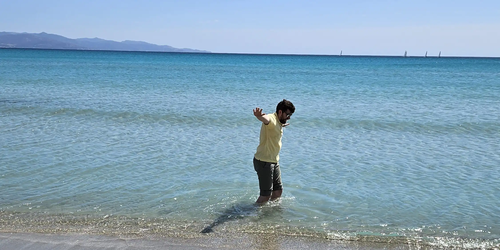

Downloads
Experiences
- 2024 - now: PhD in Computer science and the mathematics of computation, University on Insubria, Como, Italy
- 2026: Internship at Università della Svizzera Italiana, Lugano, Switzerland
- 2025: Internship at Institute for applied mathematics "Mauro Picone", Rome Branch, National Research Council of Italy, Rome, Italy
- 2023: Data analyst at Tools for Smart Minds, Castel Mella (BS), Italy
- 2020 - 2022: Master degree in mathematics, University of Insubria, Como, Italy
- 2022: Obtained the teaching qualification (24 cfu), University on Insubria, Como, Italy
- 2017 - 2020: Bachelor degree in mathematics, University of Insubria, Como, Italy
Thesis-es
- PhD thesis: It is still a secret...
- Master thesis: De exoticis 7-sphaeris (supervisor: Giovanni Bazzoni)
In this thesis, we retrace Milnor's studies aimed at finding homeomorphic but not diffeomorphic manifolds on the 7-sphere, through the study of 3-sphere bundles on the 4-sphere and their characteristic classes. - Bachelor thesis: Mixing time for Glauber dynamics (supervisor: Andrea Posilicano)
This thesis work is aimed at studying the time required for the Markov chain describing the Glauber dynamics for the Ising model to reach its stationary distribution.
Teaching and tutoring
- 2025-2026: Disciplinary tutor for the first year of the bachelor's degree in mathematics at University of Insubria (Como)
- 2024: Tutor for the "Analisi 2" course of the bachelor's degree in mathematics at University of Insubria (Como)
- 2024-2025: Disciplinary tutor for the first year of the bachelor's degree in mathematics at University of Insubria (Como)
- 2024: Tutor for the "Matematica 2" course of the bachelor's degree in chemistry at University of Insubria (Como)
- 2023: Substitute teacher at the middle school in Canobbio for mathematics
- 2023: Substitute teacher at Centro Professionale in Trevano for mathematics
- 2023: Substitute teacher at the high school in Lugano for mathematics and computer science
- 2022: Substitute teacher at the middle school in Canobbio for mathematics
- 2021: Tutor for the "Geometria 2" course of the bachelor's degree in mathematics at University of Insubria (Como)
Computer skills
- Advanced: Python, LaTex, C++, Matlab
- Intermediate: HTML, CSS, C#, SQL, LabView
- Basic: Javascript, Java